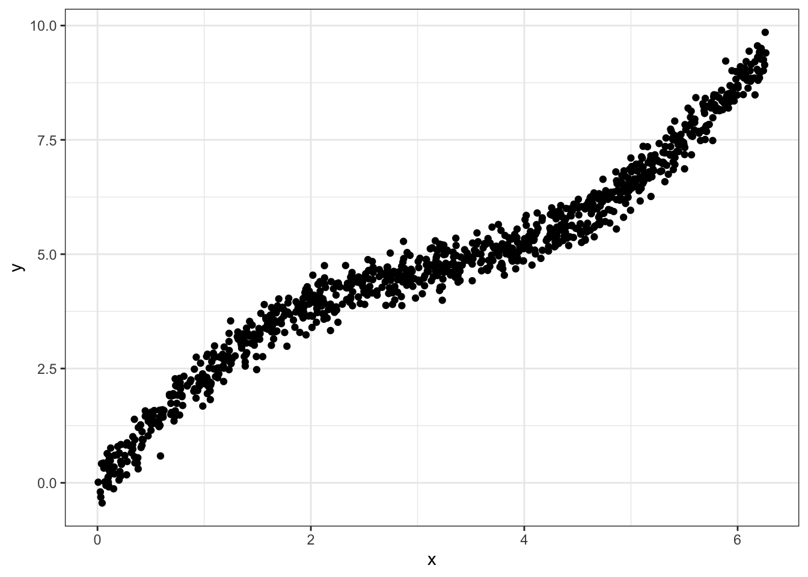
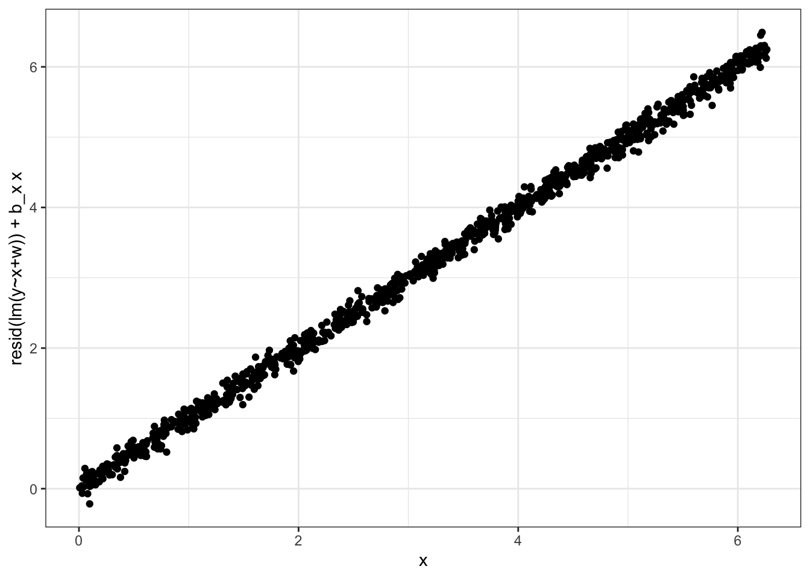
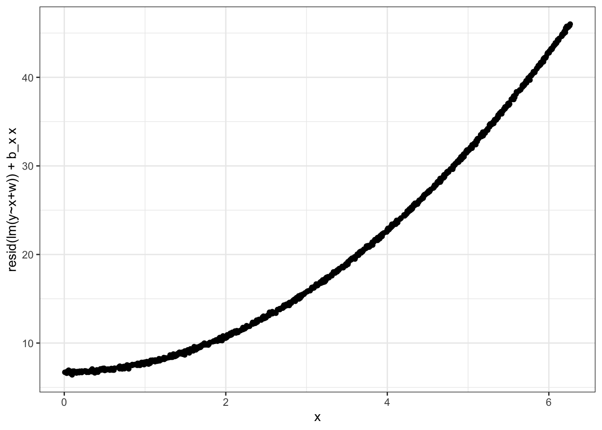

suppressMessages({require(ggplot2); theme_set(theme_bw())})
set.seed(12345)
N = 1000
x <- runif(N, min = 0, max=2*pi)
w <- .5*x + sin(x) + rnorm(N, sd=.25)
sy <- rnorm(N, sd=.1)
y <- x + w + sy
df = data.frame(x,w,y)Functional relationship in linear regression
A frequent question that comes up when modeling continuous outcomes with multiple linear regression is what the correct functional form for the relationship between the independent variables is. TLDR: the answer is a partial residual plot. Here I will generate some data to illustrate this
Data
The data consists of two real-valued ‘independent’ variables \(x,w\), where
\[ \begin{align} x &\sim U(0, 2 \pi) \\ \epsilon_w &\sim N(0, 0.25) \\ \epsilon_y &\sim N(0, 0.1) \\ w &:= \frac{x}{2} + \sin(x) \\ y &:= x + w + \epsilon_y \end{align} \]
Clearly \(y\) is linear in both \(x\) and \(w\). A plot of the data:
ggplot(df, aes(x=x, y=w,col=y, size=y)) +
geom_point() + theme_minimal()
Plots
Incorrect: marginal association
Let’s say we’re particularly interested in the relationship between \(y\) and \(x\), both conditional on \(w\). Looking at the marginal association between \(y\) and \(x\) with a scatterplot will set us on the wrong foot, because of the association between \(x\) and \(w\).
ggplot(df, aes(x=x,y=y)) +
geom_point()
Correct: partial residual plot
To construct the correct plot, we can generate a partial residual plot, which is created with resid(lm(y~x+w))+b_x x ~ x.
Where b_x is the regression coefficient found through linear regression of \(y\) on \(x\) and \(w\). In a plot:
lmfit <- lm(y~x+w)
yresid <- resid(lmfit)
b_x <- coef(lmfit)['x']
plotdata <- data.frame(x, y=yresid + b_x * x)
ggplot(plotdata, aes(x=x,y=y)) +
geom_point() +
ylab("resid(lm(y~x+w)) + b_x x")

Partial residual plot when y is not linear in x
What if \(y\) were not linear in \(x\)?
y2 <- x^2 + w + sy
lmfit2 <- lm(y2 ~ x + w)
b_x2 <- coef(lmfit2)['x']
plotdata2 <- data.frame(x, y=resid(lmfit2) + b_x2 * x)
ggplot(plotdata2, aes(x=x,y=y)) +
geom_point() +
ylab("resid(lm(y~x+w)) + b_x x")
Conclusion
The functional relationship between an outcome and a covariate in a linear regression conditional on other covariates is visualized with a partial residual plot, or:
lmfit <- lm(y~x+w)
plot(resid(lmfit) + coef(lmfit)['x'] * x ~ x)Citation
BibTeX citation:
@online{van_amsterdam2019,
author = {van Amsterdam, Wouter},
title = {Finding the Functional Form for Multiple Linear Regression},
date = {2019-08-16},
url = {https://vanamsterdam.github.io/posts/190816-lm-functional-form.html},
langid = {en}
}
For attribution, please cite this work as:
Amsterdam, Wouter van. 2019. “Finding the Functional Form for
Multiple Linear Regression.” August 16, 2019. https://vanamsterdam.github.io/posts/190816-lm-functional-form.html.